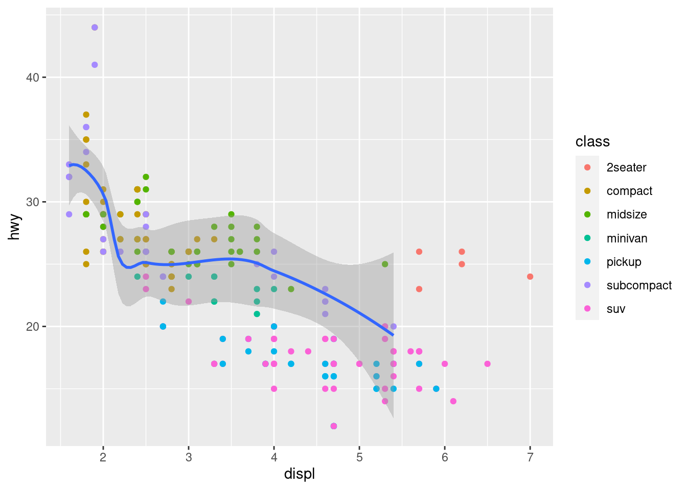

# A tibble: 234 × 11
manufacturer model displ year cyl trans drv cty hwy fl class
<chr> <chr> <dbl> <int> <int> <chr> <chr> <int> <int> <chr> <chr>
1 audi a4 1.8 1999 4 auto… f 18 29 p comp…
2 audi a4 1.8 1999 4 manu… f 21 29 p comp…
3 audi a4 2 2008 4 manu… f 20 31 p comp…
4 audi a4 2 2008 4 auto… f 21 30 p comp…
5 audi a4 2.8 1999 6 auto… f 16 26 p comp…
6 audi a4 2.8 1999 6 manu… f 18 26 p comp…
7 audi a4 3.1 2008 6 auto… f 18 27 p comp…
8 audi a4 quattro 1.8 1999 4 manu… 4 18 26 p comp…
9 audi a4 quattro 1.8 1999 4 auto… 4 16 25 p comp…
10 audi a4 quattro 2 2008 4 manu… 4 20 28 p comp…
# … with 224 more rows
Warning: The shape palette can deal with a maximum of 6 discrete values because
more than 6 becomes difficult to discriminate; you have 7. Consider
specifying shapes manually if you must have them.
“ggplot2 will only use six shapes at a time. By default, additional groups will go unplotted when you use this aesthetic.” Wickham and Grolemund (2016)
ggplot(data = mpg) +geom_point(mapping =aes(x = displ, y = hwy), color ="blue")
“To set an aesthetic man‐ ually, set the aesthetic by name as an argument of your geom function; i.e., it goes outside of aes().” Wickham and Grolemund (2016)
Exercises
ggplot(data = mpg) +geom_point(mapping =aes(x = displ, y = hwy, color ="blue"))
The problem is that the color argument appears insides aes(), which means it creates a separate char variable called ‘blue.’
“A geom is the geometrical object that a plot uses to represent data. People often describe plots by the type of geom that the plot uses.” Wickham and Grolemund (2016)
#leftggplot(data = mpg) +geom_point(mapping =aes(x = displ, y = hwy))
#rightggplot(data = mpg) +geom_smooth(mapping =aes(x = displ, y = hwy))
`geom_smooth()` using method = 'loess' and formula = 'y ~ x'
`geom_smooth()` using method = 'loess' and formula = 'y ~ x'
ggplot(data = mpg, mapping =aes(x = displ, y = hwy)) +geom_point(mapping =aes(col = class)) +geom_smooth(data =filter(mpg, class =='subcompact'),SE =FALSE)
Warning in geom_smooth(data = filter(mpg, class == "subcompact"), SE = FALSE):
Ignoring unknown parameters: `SE`
`geom_smooth()` using method = 'loess' and formula = 'y ~ x'

Prediction: This is gonna make a colorful-ass plot where both the color of the dots, and the number and color of the geom_smooth lines will be mapped onto the drivetrain.
ggplot(data = mpg,mapping =aes(x = displ, y = hwy, color = drv)) +geom_point() +geom_smooth(se =FALSE)
`geom_smooth()` using method = 'loess' and formula = 'y ~ x'
ggplot(data = mpg,mapping =aes(x = displ, y = hwy, color = drv)) +geom_point(show.legend =FALSE) +geom_smooth(se =FALSE, show.legend =TRUE)
`geom_smooth()` using method = 'loess' and formula = 'y ~ x'
ggplot(data = mpg) +geom_point(mapping =aes(x = displ, y = hwy))
“The values of hwy and displ are rounded so the points appear on a grid and many points overlap each other. This problem is known as overplotting.” Wickham and Grolemund (2016)
position = “jitter” adds just a small amount of random noise to each point so overlapping points can appear next to each other. This helps prevent ‘overplotting.’